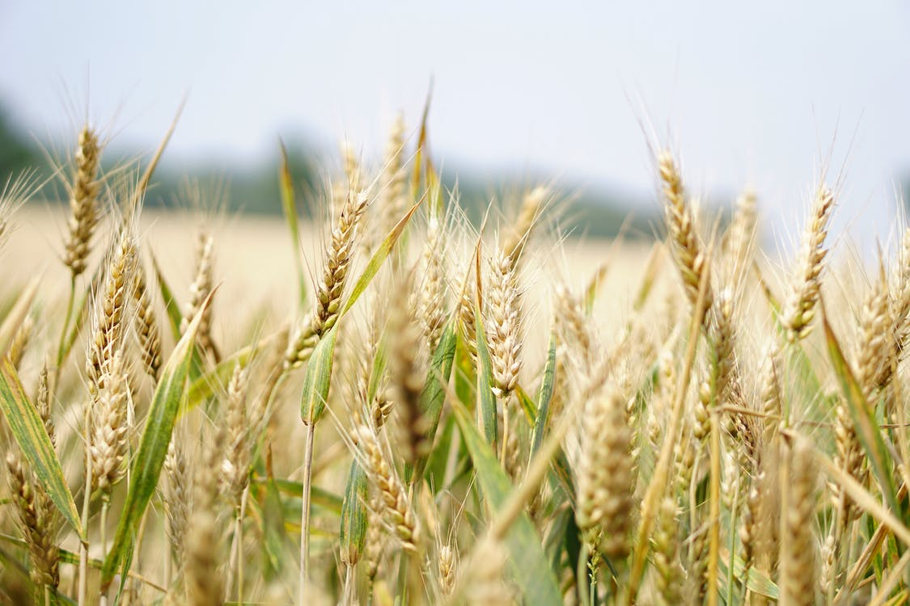

Cultivo
Cosecha

Sistema HCCAS
Beneficios para tu Salud y Bienestar
El Pasto de Trigo es conocido por ser una fuente concentrada de nutrientes esenciales. Rico en clorofila, vitaminas y minerales, nuestro pasto de trigo es un impulso natural para tu salud. Desde mejorar la digestión hasta fortalecer el sistema inmunológico, los beneficios son tan abundantes como nuestro compromiso con la calidad.
Más información